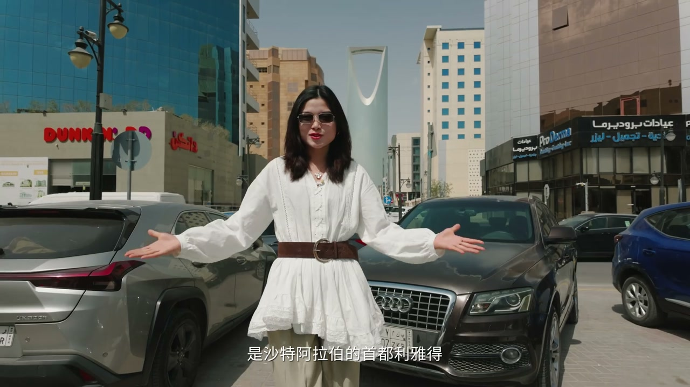
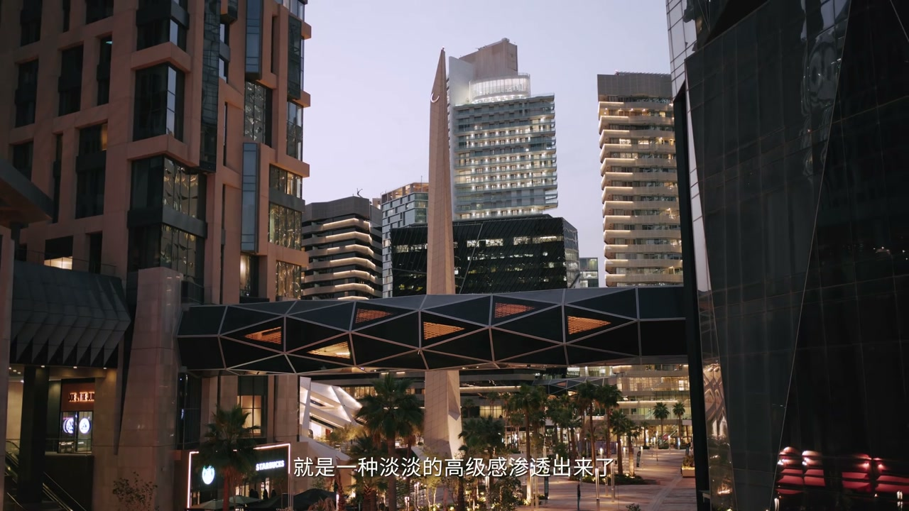
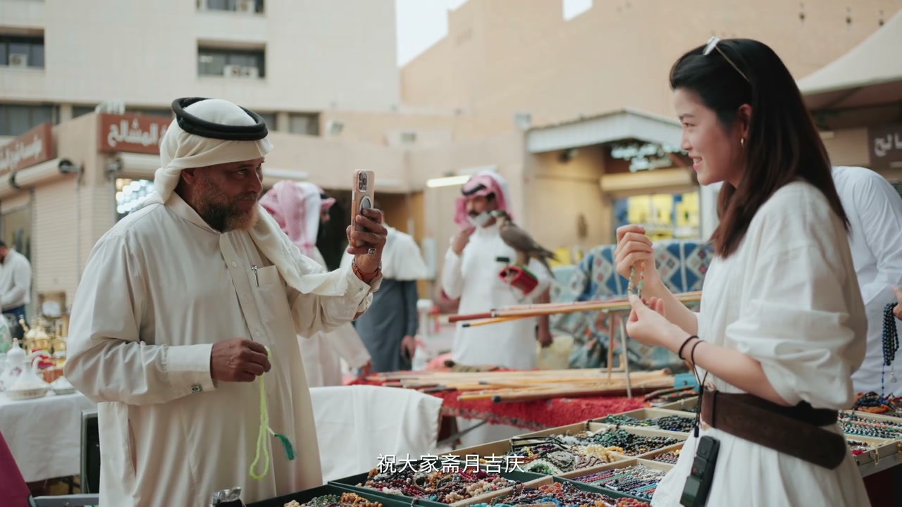
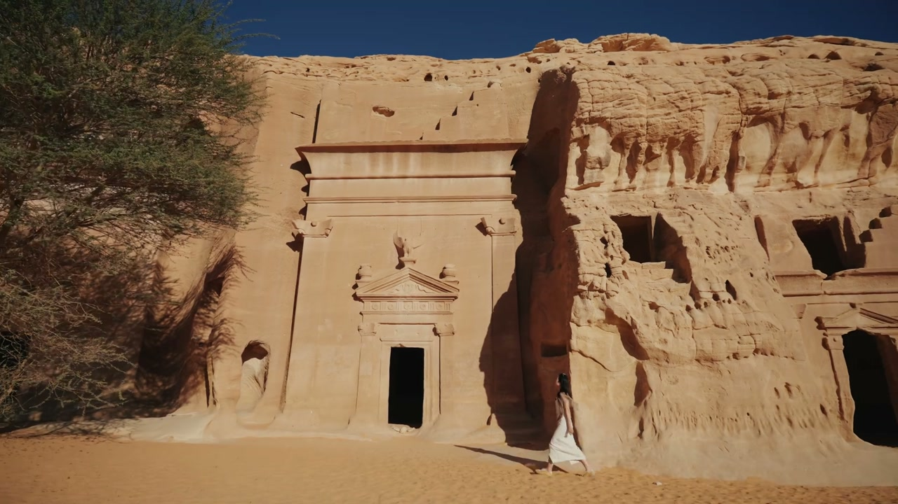
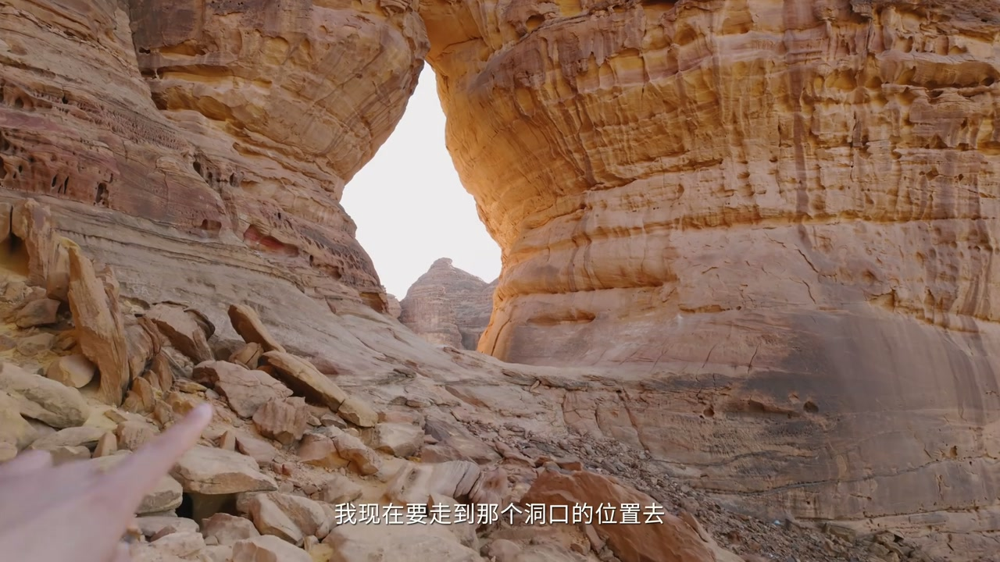
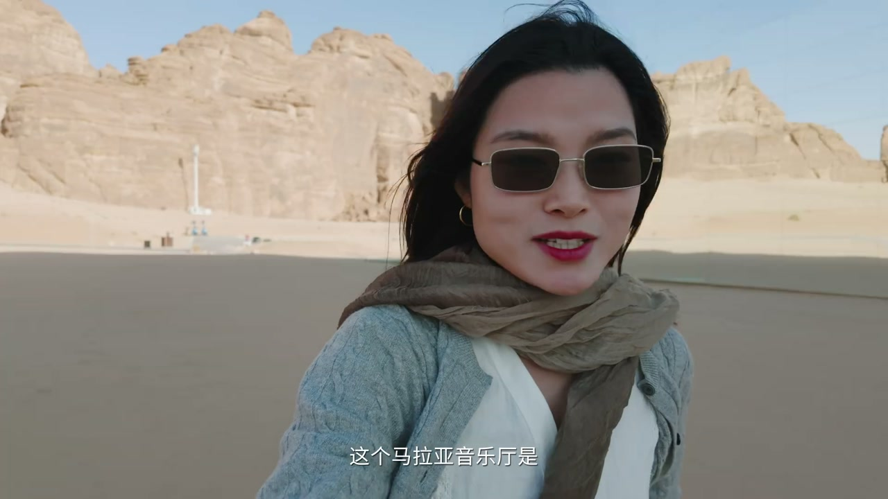

利雅得：王国中心 + KAFD 金融区
00:58六年前沙特还是旅行者最难抵达的国家之一，现在已开放旅游签——首都利雅得的城市地标王国中心大厦（302 米，1999 年开工 02 年完工，一跃成为利雅得最高建筑）。
01:33搭乘 99 层电梯到最顶层，走上镂空位置的天空之桥俯瞰整个利雅得——城市很整洁，房子错落有致；面前是法赫德国王路，路上所有高楼基本都是近 20 年快速崛起的。
02:27KAFD 金融中心：每栋建筑都不一样——打造时汇集了来自全球十几位顶尖设计师，人称科幻版曼哈顿；夏天建筑间不需要炎热地走来走去，走黑色连廊就能到相邻建筑。
03:15其中最颠覆传统的是没有圆顶的清真寺：设计灵感来自沙特的天然矿物沙漠玫瑰结晶体，外观冷角分明、几何线交错；顶端是宣礼塔（以前宣礼员爬上去宣告礼拜，现在用扩音设备）——未来感建筑群中清真寺一点都不违和，传递出信号：沙特既有前卫科技感，又包裹住了最古老核心的信仰。

地铁+地下森林 + 传统市集
05:16地下 30 米：谁能想到他们把地铁建在这里，还在底下打造了地下森林——绿意盎然，抬头有不锈钢顶棚像城市潜望镜。
05:47利雅得地铁 2024 年 12 月首次开通，完成的是世界上最长的无人驾驶公共交通系统。
05:59坐地铁抵达本地人常逛的集市——没有写字楼的精密，只有最原始的买卖和市井喧嚣：最大传统服饰集散地（长袍、头巾、帽子）、烧来闻的古老香料。
06:38现场做阿卡尔（阿拉伯人头上的黑色头箍）：有专门店，用小木堆做尺寸一点点砸紧。
07:00最传统的哈拉吉拍卖市场：摊位上全是古董小物件——一个中东特色箱子，仔细一看上面有英文“Made in China”，大叔说“我来自阿拉伯，这是我的礼物”，送中国客人小礼物。
07:41“不管一座城市跑得有多快，总有人会怀念这种粗粝的质感——透过这些老物件，还能看见阿拉伯人过去的生活方式。”


埃尔奥拉：黑格拉纳巴泰陵墓
08:13如果时光倒流，更早以前的沙特是什么样子——往北走，去往埃尔奥拉（AlUla）：麦地那下面的行政区，麦地那是伊斯兰教文化第二大圣城。
09:12最先征服人的是非常高大的红褐色岩石——整个城市被巨大岩石包裹；路边有“小心骆驼”路牌，真的有骆驼拦住去路，身上颜色和石头一模一样。
10:35第一站黑格拉：人类和自然共同打造的奇迹——这些巨大陵墓是纳巴泰人爬上岩石顶部，从上往下一点点凿出来的。
10:50对于纳巴泰人来说，生是短暂的迁徙，死才是永恒的定居——所以今天看不到早期居所，却能看到历经几千年依然屹立的陵墓群，这是人类对抗荒芜最强硬的证明。
11:19细节：陵墓顶有乌鸦阶梯（灵魂沿阶梯上到天国）、门框最上面有老鹰（陵墓守护神，跟埃及文化很像——动物被赋予神性）；里面的陵墓大小取决于财富多少；一层层的上下铺就是放尸体的位置。

大象岩 + 埃尔奥拉古城
12:27如果说黑格拉是人工的极致，大象岩所在的区域就是大自然的鬼斧神工——完全自然风化的遗迹，油封青石层各种造型，手指轻轻一碰沙子就掉下来。
13:41几百万年的风沙像一把慢刀，在这片荒野里反复雕琢——直到夕阳完全沉默，游人才渐渐散去：“在这片荒漠里，人类只是路过，那些伫立的砂岩才是永恒的主人”。
14:04埃尔奥拉古城：最早起源于公元 12 世纪，一直延续到 20 世纪 80 年代都有人居住——传统泥砖房 900 多座、5 个广场、400 多家商铺，逛起来像迷宫；现在正值斋月，商店饭店大多关门，好处是“一个人承包了整片景区”。
16:22入夜的古城很静谧，地上一个个地灯很有氛围；斋月开斋饭：炸物、炒饭、鸡饭、石榴凉拌，饿了一整天后大开吃界。

沙漠房车 + Maraya 镜面音乐厅
16:51驱车前往沙漠更深处，体验特色住宿——房车营地同时也是酒店：赶上斋月半价拿下；里面沙发休息区、洗漱台、冰箱饮料、微波炉、收纳空间、简约淋浴间——“在沙漠里能洗个热水澡，是很不错的体验”；休息区做了 360 度环绕窗景，窗外就是沙漠景观，“跟看电影一样”。
19:44道路尽头那面超级大的镜子——Maraya 音乐厅：吉尼斯认证的世界最大镜面建筑，镜子覆盖超过 9000 多平方米；设计师说任何建筑物都比不上自然的魅力，所以用镜面设计，让千年岩石、沙漠、蓝天全部倒映在上面；还有防止鸟撞的识别设计。
20:36日落时分：逆光下巨大镜子反射的光把石头照得波光粼粼——“极致的镜面效果，这是一个隐喻：一面是沙特突飞猛进的发展和对未来的野心，另一面永远倒映着一片无法被抹去的古老底色”。
